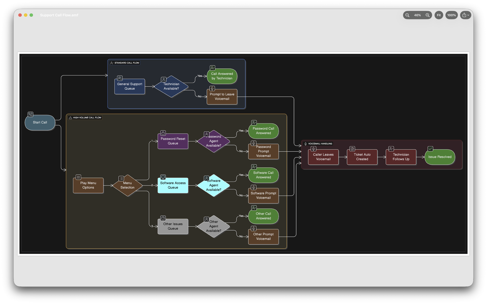
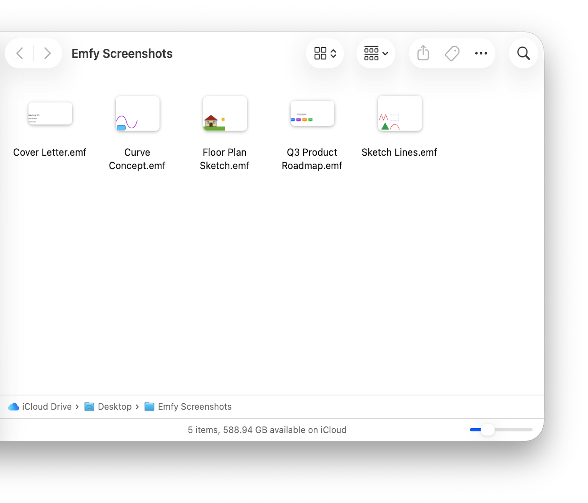
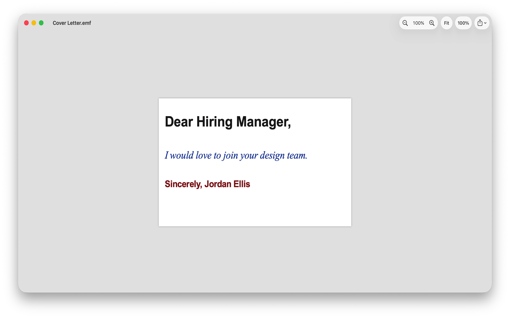
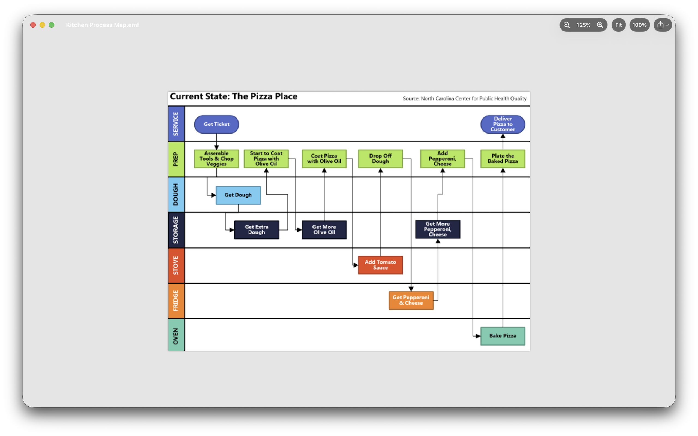

Emfy
Press space on an .emf file. See the picture.
A free, open-source viewer for EMF (Enhanced Metafile) files on macOS — Quick Look previews, Finder thumbnails, and a small viewer app.
macOS 14+
MIT licence
v1.1
Press space on an .emf file. See the picture.
A free, open-source viewer for EMF (Enhanced Metafile) files on macOS — Quick Look previews, Finder thumbnails, and a small viewer app.
EMF is the vector format Windows tools quietly export: diagrams out of PowerPoint and Visio, charts out of Excel, drawings out of engineering tools. macOS opens none of it. Emfy fixes that where you actually work — the spacebar and the Finder window.

Download Emfy.dmg from the
latest release, open
it, and drag Emfy to Applications. Launch it once — Finder thumbnails and
spacebar previews activate from then on. The app is notarized, so it opens
without Gatekeeper warnings. Requires macOS 14.0 (Sonoma) or later.
.emf files — the two
things no free macOS tool offered.
.emf files

Xcode 26 or newer (Swift 6.2 toolchain).
The EMFKit package — parser, renderer, and the emfy-dump debugging CLI:
cd EMFKit swift test # fixtures, snapshots, fuzz swift build -c release .build/release/emfy-dump path/to/file.emf # record inventory + diagnostics
The app and both Quick Look extensions:
xcodebuild -project Emfy/Emfy.xcodeproj -scheme Emfy -configuration Debug build
corpus/ holds the self-generated test files the suite depends on.
scripts/release.sh is the notarized-release pipeline — point it at your
own signing identity if you ship a fork.
The most valuable contribution is a real .emf file that renders wrongly.
See CONTRIBUTING.md
for the file-licensing ground rules, the clean-room policy, and code expectations.
MIT © 2026 Avneet Singh